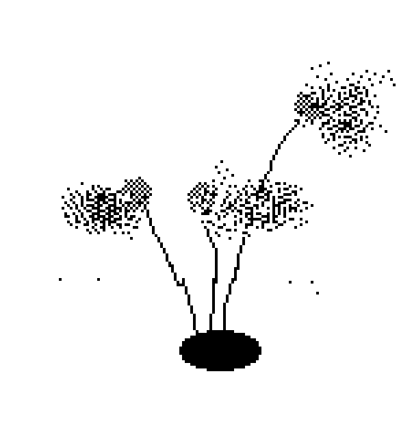
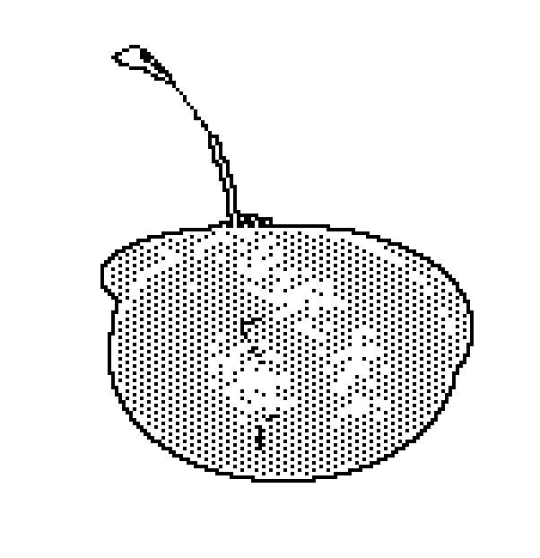
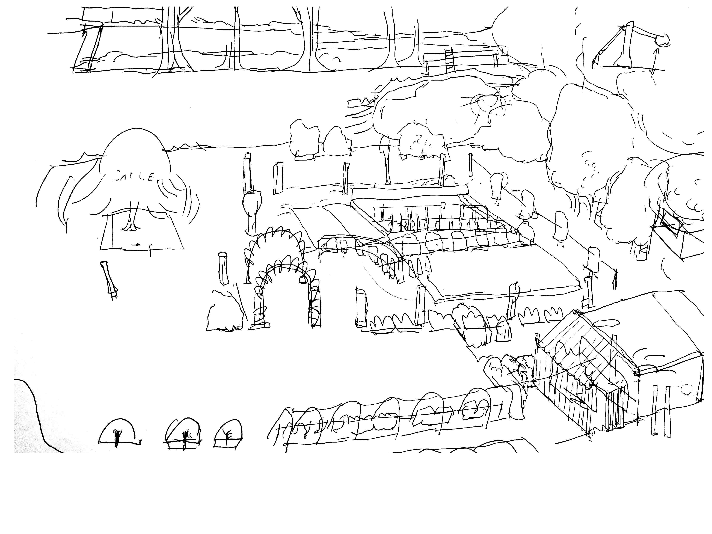

Under Barry Pepper’s Feet

Old dryied up seed from the cupboard you forgot. Leeks Stem from the market. Application are small and varied. Actively sprouting is a project that pushes you to experiment with the growth of gathered plants. the surprises and the many failure of sprout tests challenges you to draw conclusion on the d-factors that influences your bits. Think of the temperature of the room, the duration of direct sunlight in a day, the time water take to evaporate, Orientation, evaporation, temperature, and looking at the effect of time mixed up with light and water with random founds Simply testing how time light water and soil Sprouting practice, I started gathering Actively planting seeds, detached from the wait of the result

Bruxelles

Amarante Queue de renard rouge

Amarante Queue de renard rouge

Amarante Queue de renard rouge
.png)
Lin Bleu (engrais vert)

Chou kale

Pois à rames mangetout

Chervis

Myosotis

Armoise annuelle

Côte de bette à cardes rouges
Les Marnières
GOOD SOIL

GOOD SOIL
something i heard in the soil fertility business : If I pick up a handful of dirt and find four or more worms, i will work with you

Broad bean (fèves) after a month and a half! Just hoping for the winter.


Alix is gathering a pile of leaves.

First attempt to make a fertile soil over the winter. A big stack of leaves is stock under these large plastic sheets.

My father, unlike me, is into anticipation, he is very attached to adding gates everywhere around the plants : so they don't get eaten. I think he also like to hammer once in a while on these wooden sticks when he comes down.

"Quand on pense qu'on commence à comprendre la nature, on peut-être sûr qu'on est sûr la mauvaise piste.(...)Pourquoi est-il impossible de connaître la nature?"
"Quatre principe de l'agriculture sauvage:-Ne pas cultiver
-Pas de fertilisant chimique ou de compost préparé
-Ne pas desherber aux herbicides
-Pas de dépendance enver les produits chimiques"
"J'aspirais a une manière de cultiver qui fasse plaisir, naturelle, qui aboutisse à rendre le travail plus aisé et non plus dur."
To Find
WHAT la Ferté-vidame

Old Man’s Beard (Clematis vitalba)

Larme de Job (Coix lacryma-jobi), des graines en perles

Amaranthus tricolor, or Joseph's Coat